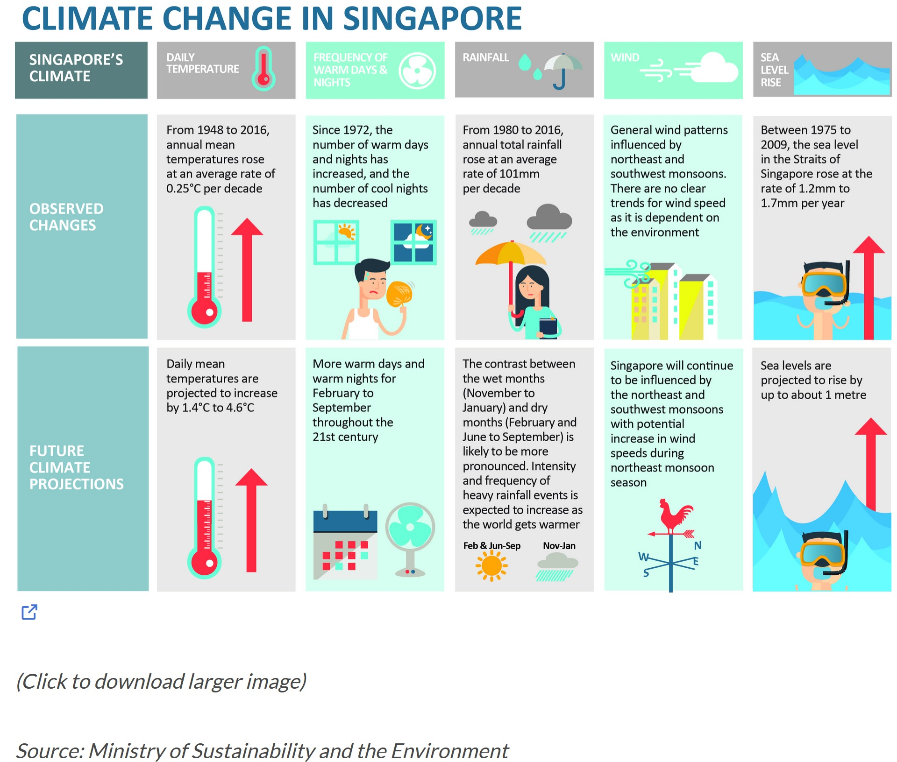

pacman::p_load(tidyverse,ggdist, ggridges,
ggthemes,colorspace,ungeviz,
plotly,crosstalk,DT,gganimate,
gifski, gapminder)Take-Home Exercise 3: Be Weatherwise or Otherwise
1. Overview
Here is an office report as shown in the infographic below, after reviewing it, certain figures and statements have captured my attention.

As shown in “DAILY TEMPERATURE” sector:
- From 1948 to 2016, annual mean temperatures rose at an average rate of 0.25℃ per decade.
- Daily mean temperatures are projected to increase by 1.4℃ to 4.6℃.
The annual mean temperatures rose in a slow speed at 0.25℃ per every 10 years. However, the daily mean temperatures are expected to increase by at least 1.4℃ which is nearly equal to the increasement of annual mean temperatures in 60 years. This sounds a bit confusing and need in-depth study.
2. Task
In this take-home exercise, I will:
Select Changi weather station, download data on daily temperature of December of the year 1983, 1993, 2003, 2013, 2023. Data is downloaded from historical daily temperature.
Use visualizing uncertainty methods to validate the claims on daily mean temperatures.
Use visual interactivity to display the discovery on daily mean temperatures.
3. Data Preparation
3.1 Install and load packages
In this study, I’ll use several R packages shown as below.
3.2 Data Wrangling
First, I’ll import all data downloaded from website.
Code
data_1983 <- read_csv("data/DAILYDATA_S24_198312.csv")
data_1993 <- read_csv("data/DAILYDATA_S24_199312.csv")
data_2003 <- read_csv("data/DAILYDATA_S24_200312.csv")
data_2013 <- read_csv("data/DAILYDATA_S24_201312.csv")
data_2023 <- read_csv("data/DAILYDATA_S24_202312.csv")Then, I’ll check all variables in these files.
Code
data_1983
data_1993
data_2003
data_2013
data_2023Upon reviewing the data, there are some issues need to be addressed.
1. Re-match the values with the correct column
For the year 1983, 1993, 2003, 2013, the values of “Mean Temperature” are wrongly listed in column “Highest 30 Min Rainfall (mm)” due to the missing values on “Highest 30 Min Rainfall (mm)” in these years and the treatment of missing values when imported into R. The values need to be re-matched to column “Mean Temperature”.
2. Remove special characters “???” from the values of “Mean Temperature”
For the year 1983, 1993, 2003, 2013, the values of “Mean Temperature” start with “???” which need to be removed.
The codes are shown as below:
Code
# Remove "???"
data_1983$"Highest 30 Min Rainfall (mm)" <-
as.numeric(gsub("^\\?+", "", data_1983$"Highest 30 Min Rainfall (mm)"))
data_1993$"Highest 30 Min Rainfall (mm)" <-
as.numeric(gsub("^\\?+", "", data_1993$"Highest 30 Min Rainfall (mm)"))
data_2003$"Highest 30 Min Rainfall (mm)" <-
as.numeric(gsub("^\\?+", "", data_2003$"Highest 30 Min Rainfall (mm)"))
data_2013$"Highest 30 Min Rainfall (mm)" <-
as.numeric(gsub("^\\?+", "", data_2013$"Highest 30 Min Rainfall (mm)"))
# Re-match values to correct column
data_1983 <- data_1983 %>%
mutate(`Mean Temperature`=`Highest 30 Min Rainfall (mm)`)
data_1993 <- data_1993 %>%
mutate(`Mean Temperature`=`Highest 30 Min Rainfall (mm)`)
data_2003 <- data_2003 %>%
mutate(`Mean Temperature`=`Highest 30 Min Rainfall (mm)`)
data_2013 <- data_2013 %>%
mutate(`Mean Temperature`=`Highest 30 Min Rainfall (mm)`)After pre-processing on data, we move on to prepare these data for further analysis.
1. Combine the 5 files and focus on the variables need to be analyzed
Here I pick “Station”, “Year”, “Month”, “Day”, “Mean Temperature” to do the further processing and remove all the other variables.
Code
# Uniform column names among all files
colnames(data_2023)[6] <- "Highest 30 Min Rainfall (mm)"
colnames(data_2023)[7] <- "Highest 60 Min Rainfall (mm)"
colnames(data_2023)[8] <- "Highest 120 Min Rainfall (mm)"
# Combine files and remove columns
temperature <- rbind(data_1983, data_1993, data_2003, data_2013, data_2023)
temperature <- temperature[, -c(5,6,7,8,10,11,12,13)]2. Combine Year, Month and Day into Date
Code
temperature$Date <- as.Date(paste(temperature$Year,
temperature$Month,
temperature$Day,
sep = "-"),
"%Y-%m-%d")3. Calculate the change on daily mean temperature
To study on the increasment of daily mean temperature, I create a new column called “Mean_Change” to observe the variance on daily mean temerature. This variable is obtained by subtracting today’s daily mean temperature from that of yesterday.
Code
temperature$Mean_Change <- c(0, diff(temperature$"Mean Temperature"))4. Calculate the mean, standard deviation and standard error of daily mean temperature
Here I apply statistic methods to assess the central tendency and interval estimate regarding the variance on daily mean temperature. I’ll calculate statistics such as mean, standard deviation and standard error first and add them to the plot later on.
Code
my_summary <- temperature %>%
group_by(Year) %>%
summarise(
n=n(),
mean=mean(Mean_Change),
sd=sd(Mean_Change)
) %>%
mutate(se=sd/sqrt(n-1))4. Data Visualization
4.1 Methods
I choose confidence interval plotting in this study because the aim of this study is to assess the estimate on the increasement or the change on daily mean temperature (Δ℃) and the uncertainty of the estimate as well.
Mean of change on daily mean temperature: will show the estimated increasement or change on daily mean temperature.
Confidence interval of change on daily mean temperature: will provide a range which the estimated change on daily mean temperature will fall in due to uncertainty.
4.2 Principle
4.2.1 Clarity
X axis
need to be labeled to be the year 1983, 1993, 2003, 2013, 2023.
Y axis
in most cases, the quantitative scale on y axis should begin at 0. But in this case, since I need to assess the variation on daily mean temperature, it might be negative or positive depending on whether today’s mean temperature is rising or dropping. So I’ll set the quantitative scale on y axis starting with negative numbers. Y axis title might be “Variation on daily mean temp (Δ℃)”.
Graph title and subtitle
create an attention-grabbing title together with a descriptive subtitle to bring better understanding to readers.
Caption
need to mark the source of data.
Call-outs of important information
Important information here refer to the mean and confidence interval of the change on daily mean temperature. I’ll apply interactivity to visualize the figures on the plot.
4.2.2 Aesthetic
Data ink
make the plot clear to emphasize information
Grid line
remove irrelevant grid lines
4.3 Final Plot
Code
shared_df = SharedData$new(my_summary)
p <- ggplotly((ggplot(shared_df) +
geom_errorbar(aes(
x=Year,
ymin=mean-2.58*se,
ymax=mean+2.58*se),
width=0.2,
colour="black",
alpha=0.9,
size=0.5) +
geom_point(aes(
x=Year,
y=mean,
text = paste("Year:", `Year`,
"<br>N:", `n`,
"<br>Avg. Scores:", round(mean, digits = 2),
"<br>99% CI:[",
round((mean-2.58*se), digits = 2), ",",
round((mean+2.58*se), digits = 2),"]")),
stat="identity",
color="red",
size = 1.5,
alpha=1) +
ylim(c(-0.5,0.8))+
scale_x_continuous(breaks = c(1983, 1993, 2003, 2013, 2023),
labels = c("1983", "1993", "2003", "2013", "2023"))+
theme_minimal(base_size = 7)+
theme(axis.title.x = element_blank(),
axis.title.y = element_blank(),
panel.grid.major.x = element_blank(),
panel.grid.minor.x = element_blank(),
panel.grid.minor.y = element_blank())),
tooltip = "text")
p <- layout(p,
annotations = list(
list(
text = "The fluctuation in daily mean temperature exhibits extremely minor variations around 0℃.\nAt 99% CI, the estimated change in daily mean temperature falls within a range of ±0.5℃.\nSubtle changes over the period may still contribute to the overall global warming trend.",
x = 0.5,
y = 0.97,
xref = "paper",
yref = "paper",
showarrow = FALSE,
font = list(size = 10)
),
list(
text = "Insight on variation of daily mean temperature in Singapore",
x = 0.5,
y = 1.05,
xref = "paper",
yref = "paper",
showarrow = FALSE,
font = list(size = 20,
family = "Aptos Black",
weight = "bold")
),
list(
text = "Source: Meteorological Service Singapore",
x = 1,
y = -0.072,
showarrow = FALSE,
xref = "paper",
yref = "paper",
font = list(size = 8)),
list(
text = "Variation on daily \nmean temp (Δ℃)",
x = -0.045,
y = 0.855,
showarrow = FALSE,
xref = "paper",
yref = "paper",
font = list(size = 8)),
list(
text = "Year",
x = 0.5,
y = -0.072,
showarrow = FALSE,
xref = "paper",
yref = "paper",
font = list(size = 8))))
p5. Conclusions
Estimated change on daily mean temperature
The mean change on daily mean temperature marked as red dot in the plot shows minor fluctuations around 0 ℃.In 1983, the average change on daily mean temperature was 0°C, indicating no significant temperature change. In the year 1993 and 2023, the average changes were 0.01°C each, indicating extremely slight temperature increases. The average change in 2003 was slightly higher at 0.03°C, while in 2013, it was -0.05°C, suggesting a slight temperature decrease that year. All the changes fluctuate around 0 ℃.
Confidence interval of estimation
Confidence interval reveals the uncertainty of estimation. In this plot, although the CIs have relatively narrow widths (approximately within a range of ±0.5℃), they indeed encompass 0°C. This indicates that from a statistical perspective, we cannot completely rule out the possibility of no change in the average daily temperature.
Long-term tendency
Studying climate change is a long-term process that requires extensive data support. This study utilizes data spanning five years (one month per year), which is still insufficient in quantity. Additionally, based on the data used in this study, it can be observed that temperature changes are minor. However, when these slight changes are extrapolated to a broader temporal dimension over decades of years, they might still constitute a part of the global warming trend.